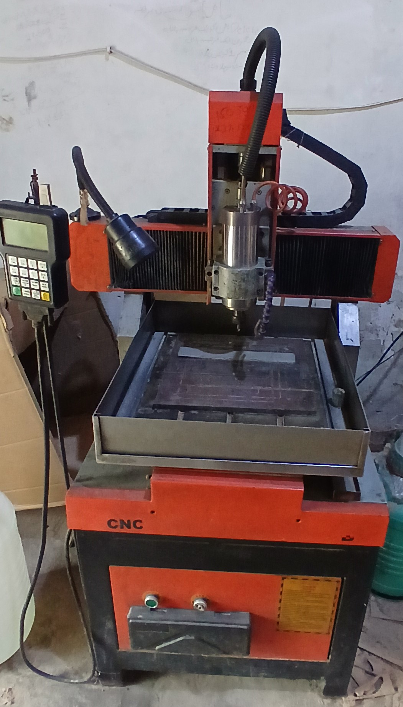

ہیوی ڈیوٹی 4040 سی این سی راؤٹر — PKR 5,00,000۔ 2.2kW واٹر کولڈ اسپنڈل، DSP ہینڈہیلڈ کنٹرولر، T-سلاٹ بیڈ بمع کولنٹ ٹرے۔ لکڑی، ایکریلک، ایلومینیم، پیتل کاٹتا ہے۔ 100% چلتی حالت میں، براہ راست مالک سے۔

یہ ہیوی ڈیوٹی 4040 فارمیٹ سی این سی راؤٹر ہے جس کا ورکنگ ایریا 400×400 ملی میٹر ہے۔ اسٹیل فریم، ڈوئل ریل گینٹری، اور 2.2kW ہائی فریکوئنسی واٹر کولڈ اسپنڈل — خاموشی سے اور کم وائبریشن کے ساتھ چلتا ہے۔ DSP ہینڈہیلڈ کنٹرولر پاکستان کے خریداروں کے لیے سب سے بڑا فائدہ ہے: USB سے G-code فائل لوڈ کرتا ہے اور مکمل طور پر آزادانہ کام کرتا ہے — آپریشن کے دوران لیپ ٹاپ یا ڈیسک ٹاپ کنیکٹ کرنے کی کوئی ضرورت نہیں۔
T-سلاٹ ایلومینیم بیڈ بمع انٹیگریٹڈ کولنٹ ٹرے اسے غیر فیرس دھات کی انگریوی اور کٹائی کے لیے عملی بناتی ہے — ایلومینیم، پیتل، تانبہ — جہاں سیلاب یا مسٹ کولنگ بٹ کو ٹھنڈا رکھتی اور ٹول لائف بڑھاتی ہے۔
مشین 100% چلتی حالت میں ہے۔ اسپنڈل کولنگ کے لیے واٹر پمپ، ورک لیمپ، اور تمام پاور کیبلز کے ساتھ آتی ہے۔ سیالکوٹ میں آن سائٹ معائنہ ممکن ہے — +92 308 6643799 واٹس ایپ کریں۔
| ورکنگ ایریا | 400 ملی میٹر × 400 ملی میٹر (4040 فارمیٹ) |
| اسپنڈل | 2.2 kW ہائی اسپیڈ، واٹر کولڈ |
| کنٹرولر | DSP ہینڈہیلڈ — USB سے آزادانہ آپریشن، PC کی ضرورت نہیں |
| بیڈ کی قسم | T-سلاٹ ایلومینیم بمع کولنٹ ٹرے |
| پاور سپلائی | 220V سنگل فیز (پاکستان کی معیاری سپلائی) |
| شامل اشیاء | واٹر پمپ، ہوزز، ورک لیمپ، کیبلز |
| حالت | استعمال شدہ — 100% چلتی حالت میں |
| مقام | سیالکوٹ، پاکستان |
| قیمت | PKR 5,00,000 (قابلِ گفتگو) |
DSP ہینڈہیلڈ کنٹرولر پاکستان کے زیادہ تر خریداروں کے لیے سب سے اہم خصوصیت ہے:
بجلی: مشین معیاری 220V سنگل فیز پر چلتی ہے — وہی سپلائی جو AC یا بڑی لیتھ استعمال کرتی ہے۔ پنجاب اور سندھ کے ان علاقوں میں جہاں وولٹیج غیر مستحکم ہے، 5–7 kVA سرو سٹیبلائزر (PKR 15,000–30,000) اسپنڈل انورٹر اور اسٹیپر ڈرائیورز کو تحفظ دیتا ہے۔
ٹولنگ: اس مشین کے لیے کاربائیڈ اینڈ ملز — لاہور کے انارکلی اور ہال روڈ مارکیٹ، کراچی کی الیکٹرانکس مارکیٹ سے دستیاب۔ PKR 800–3,000 فی بٹ۔
ادائیگی: IBFT بینک ٹرانسفر یا نقد قبول کیا جاتا ہے۔ 20–30% ایڈوانس مشین محفوظ کر دیتا ہے۔
یہ استعمال شدہ مشین PKR 5,00,000 (قابلِ گفتگو) میں دستیاب ہے — براہ راست مالک سے، کوئی بروکر نہیں۔ نیا ہم پلہ مشین PKR 8,00,000–15,00,000 کا آتا ہے۔ واٹس ایپ +92 308 6643799 بہترین قیمت کے لیے۔
نہیں۔ DSP ہینڈسیٹ مکمل طور پر آزادانہ کام کرتا ہے — USB سے G-code لوڈ کریں اور Start دبائیں۔ PC صرف ڈیزائن کے لیے چاہیے۔
لکڑی، MDF، ایکریلک، PVC، پیتل، ایلومینیم، تانبہ اور نرم دھاتیں۔ سخت فولاد کے لیے موزوں نہیں۔ T-سلاٹ بیڈ اور کولنٹ ٹرے غیر فیرس دھات کی کٹائی کے لیے مناسب ہے۔
پنجاب کے تمام بڑے شہروں تک — لاہور، گوجرانوالہ، گجرات، وزیرآباد، ڈسکہ، نارووال، جہلم تک روڈ فریٹ سے۔ کراچی اور پشاور کے لیے کارگو کا انتظام ممکن ہے۔
سیالکوٹ سے براہ راست مالک سے — کوئی بروکر نہیں، کوئی اضافی قیمت نہیں۔ واٹس ایپ کریں، چلتی اسپنڈل کی ویڈیو لائیو دیکھیں۔